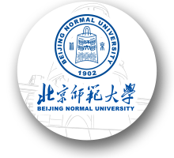

Junbo ZHAO 赵浚博
First-year PhD student in Computer Science at The University of Queensland
Visual reasoning • Multimodal AI • Neural-symbolic reasoning
First-year PhD student in Computer Science at The University of Queensland
Visual reasoning • Multimodal AI • Neural-symbolic reasoning
I am a first-year PhD student in Computer Science at The University of Queensland, supervised by Professor Helen Huang and Professor Zijian Wang. I received my Master's degree from the School of Artificial Intelligence at Beijing Normal University, where I was honored as an Outstanding Graduate of Beijing Normal University.
My research focuses on visual reasoning. I am interested in building multimodal AI systems that combine visual understanding, language, and structured reasoning to solve complex problems reliably.
Outside of academia, I enjoy exploring new places, capturing moments through photography, and staying active. I believe that maintaining a balance between intellectual pursuits and personal interests is essential for creativity and well-being.
Doctor of Philosophy in Computer Science
Supervisors: Professor Helen Huang and Professor Zijian Wang
Research Focus: Visual Reasoning
Master of Engineering in Computer Science

Supervisors: Professor Hua Huang and Professor Ting Zhang
Honors: Outstanding Graduate of Beijing Normal University
Thesis: Passed anonymous review (2A)
Research Areas: Educational LMMs/VLMs, Reasoning VLMs, Computer Vision
Major Courses: Computer Graphics, Computer Vision, etc.
Student Work: Teaching Assistant for Linear Algebra class (Mar 2024 – Jul 2024)
Bachelor of Engineering in Computer Science
Honors: Outstanding Graduate of Beijing
Major Courses: Algorithm Analysis, Databases, Data Structures, Software Engineering, Data Mining, etc.
Student Work: President, Minzu University of China Computer Association (Sep 2021 – Jul 2022)
Authors:
Institutions: 1School of Artificial Intelligence, Beijing Normal University, 2Engineering Research Center of Intelligent Technology and Educational Application, Ministry of Education, 3Beijing Key Laboratory of Artificial Intelligence for Education, 4Baidu
Overview: Pri-TPG introduces Theorem Precedence Graphs, a directed structural prior distilled from historical solution traces to encode valid theorem-application order and mitigate structural drift in deep in-context learning reasoning.
Method: This training-free pipeline constructs query-specific graphs via retrieval, then couples an LLM planner with a stepwise symbolic executor for verifiable multi-step theorem prediction.
Results: On FormalGeo7k, Pri-TPG achieves 89.29% accuracy, outperforming in-context learning baselines and matching supervised neural-symbolic methods.
Authors:
Institutions: 1Beijing Normal University, 2TAL
Overview: We proposed a novel framework for geometry problem solving that leverages diagrammatic information to resolve textual ambiguities. Our approach combines multi-modal understanding with symbolic reasoning to achieve state-of-the-art performance.
Key Components:
Results: Pi-GPS achieves state-of-the-art results, outperforming previous neural-symbolic methods by nearly 10% on standard benchmarks, including Geometry3K (77.8% on choice tasks) and PGPS9K (69.8% on choice tasks).
Graduate Student Union Representative (6th); student judge at the 2024 Student Leadership Conference; and participant in student consultation forums.
Teaching: Teaching Assistant, Linear Algebra undergraduate course (Mar 2024 - Jul 2024).
MLLM Algorithm Intern
Paper Link: https://arxiv.org/abs/2509.17336
Participated in building UI-Agent tasks and visual multimodal planning models, contributing to model training, dataset design, and case analysis.
Main Responsibilities:
Achievements: Improved model accuracy and successfully facilitated the model's online deployment.
Beijing Normal University
Men's singles, men's doubles (twice), and mixed doubles - School of Artificial Intelligence, Beijing Normal University.
Beijing Normal University
Beijing Normal University
15th Chinese Collegiate Computer Game Competition
11th Lanqiao Cup C/C++ Programming Competition, Beijing Division
Minzu University of China